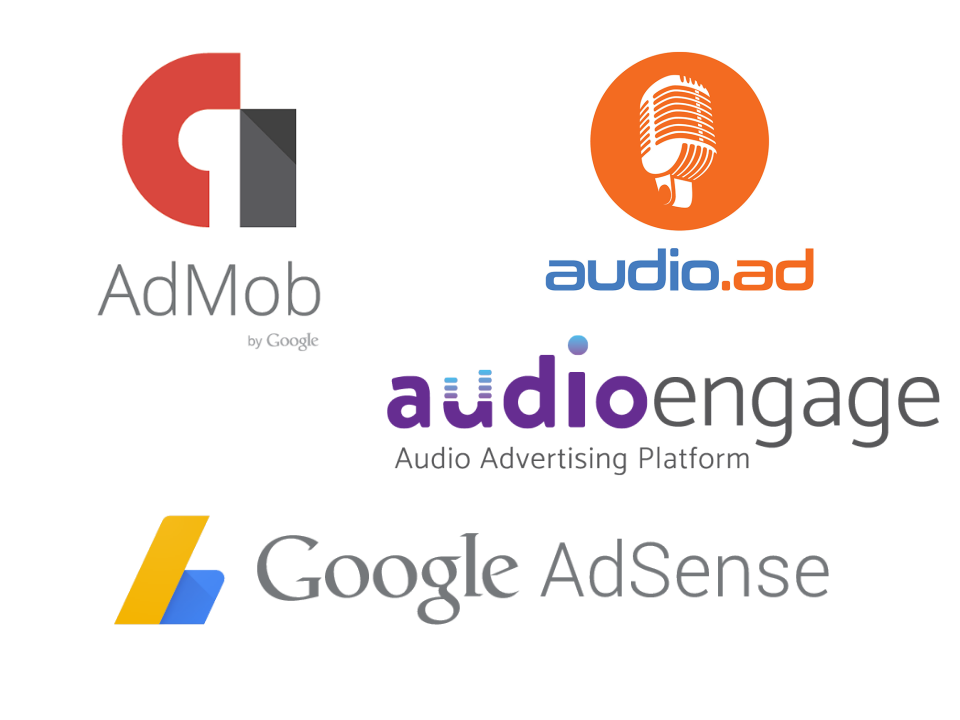
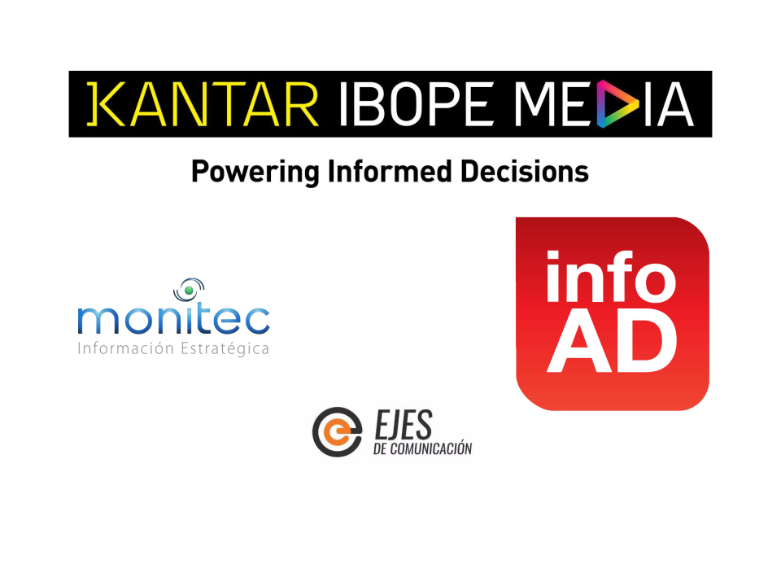
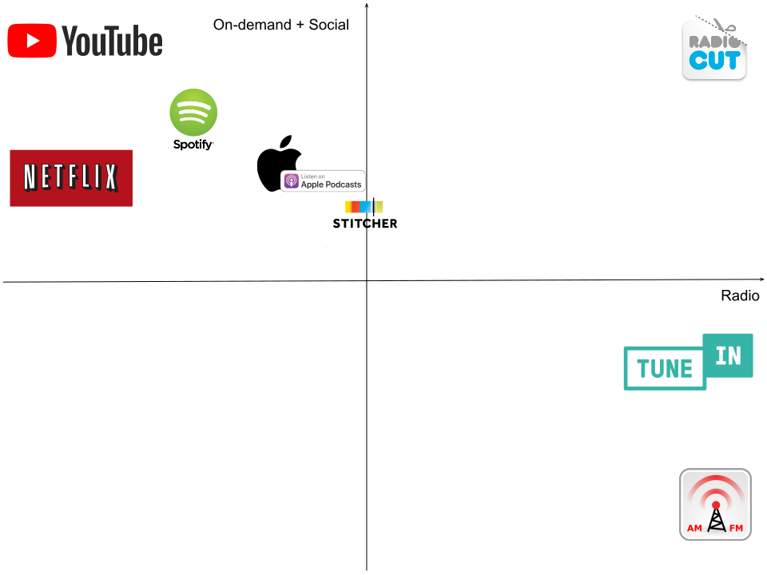
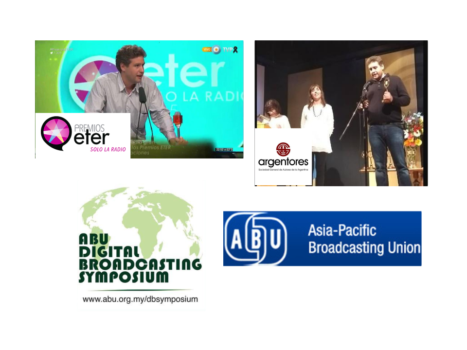

PROBLEM - Alternative #1
SOLUTION

SUBSCRIPTIONS

500M
1.8B

FOUNDER - CEO
- +20 years experience
- 2nd time founder and CEO
- Software engineer
- Also management skills
CO-FOUNDER
- +20 years experience
- Software engineer
- UX & community building
- Working together the last 14 years
~1000 years
of radio contents
8H
monthly - APP
20H
monthly - WEB SITE
700K
unique users
USD 7K

US$ 500K
THANKS!